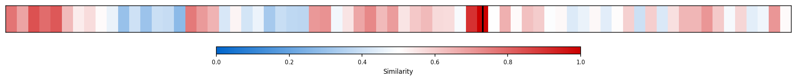
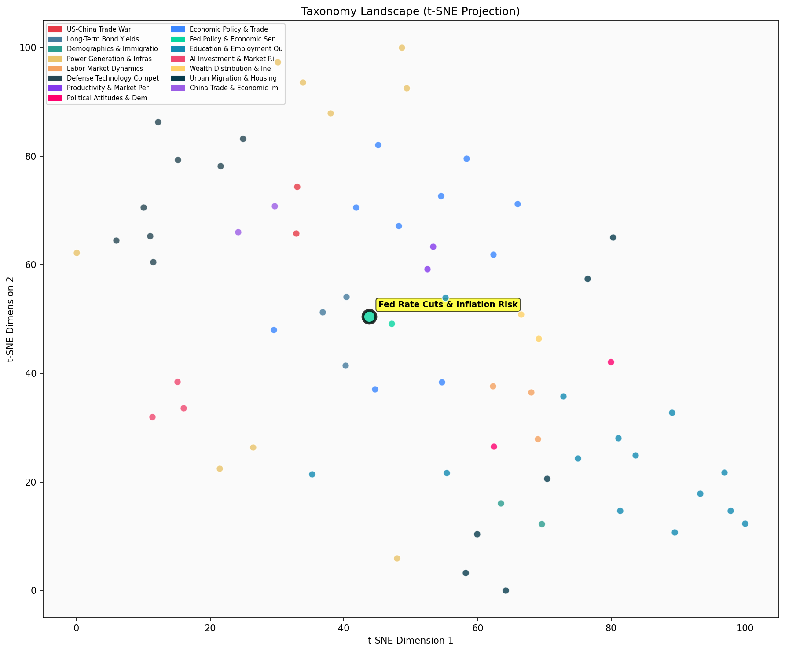

Description
This subcluster examines the Federal Reserve's rate-cutting cycle and associated inflation risks, featuring analyses of bond yield movements, monetary policy effectiveness, and historical parallels to inflationary periods like the 1970s. Articles draw on economic models, market data, and academic research to assess whether aggressive rate cuts amid economic strength could reignite inflation. Coverage includes technical analysis of yield curves, consumer sentiment studies, and warnings from economists about asymmetric inflation risks. Unlike its sibling focusing on income-inflation disparities affecting consumers, this subcluster emphasizes monetary policy mechanics and macroeconomic risks from a policy and market perspective.
Similarity to All 70 Subclusters
Each cell represents a subcluster. Color intensity shows similarity (blue=low, red=high). Black line marks current subcluster position.
Relationship to Primary Clusters
Average similarity to each of the 15 primary clusters. Larger area = stronger relationship to that cluster.
Taxonomy Landscape
All 70 subclusters positioned by similarity (t-SNE). Current subcluster highlighted with label. Click to enlarge.
Network Connections
Current subcluster at center, connected to related subclusters. Line thickness = similarity strength.
Most Representative Articles
-
1. Drawing a parallel to the 1970’s, Jesper Rangvid warns that despite recent progress in returning inf
-
2. “The latest data available on the job market, inflation, and business sentiment all suggest that the
-
3. .@M_C_Klein argues that rate cuts could be "unnecessarily stimulative" risking above-target inflatio
-
4. Fed officials expect the terminal rate will settle between 3-3.25%, not far below the current level
-
5. Torsten Sløk argues the Fed will not cut rates in 2024 citing stronger growth expectations and risin
Edge Cases (Boundary Articles)
-
1. .@JohnHCochrane argues "We should praise price-gouging. “Windfall” profits belong in the pantheon ofThis article is borderline for the "Fed Rate Cuts & Inflation Risk Concerns" cluster because while it discusses pricing mechanisms and market dynamics that relate to inflation concerns, it focuses specifically on price-gouging and competitive supply responses rather than Federal Reserve monetary policy or rate cuts. The content is more aligned with general market pricing theory and supply-demand economics than the Fed's specific policy tools and inflation management strategies that define the cluster.
-
2. Government size has a significant negative impact on growth, reducing private consumption & output pThis article is borderline for the "Fed Rate Cuts & Inflation Risk Concerns" cluster because while it discusses government economic policy impacts that could inform monetary policy decisions, it focuses on long-term structural effects of government spending on growth rather than the Federal Reserve's specific rate-cutting policies and inflation dynamics. The content is more aligned with broader macroeconomic research on fiscal policy effectiveness rather than the cluster's core focus on monetary policy tools and inflation risks.
-
3. The economic rescue package includes $174bn in temporary tax breaks, primarily benefiting wealthy inThis article is borderline because while it mentions an "economic rescue package" that could have monetary policy implications, its primary focus is on tax breaks for wealthy individuals and corporations rather than Federal Reserve interest rate decisions or inflation risks. The content aligns much better with tax policy discussions than monetary policy analysis, as evidenced by its higher similarity (0.68) to the Tax Policy cluster.
Original Dendrogram